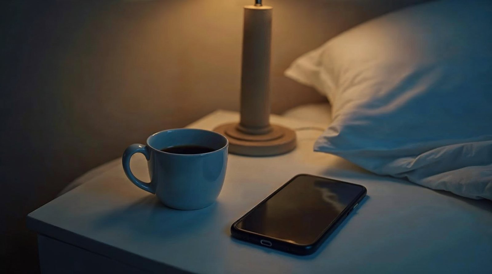
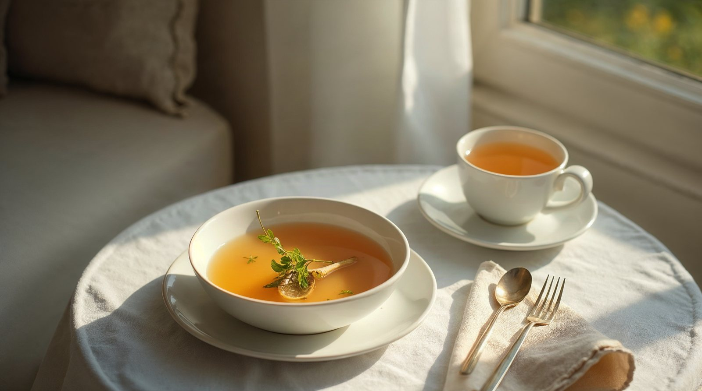

이종호 한의사 감수좋은꿈참사랑한의원 대표원장 (한의사 면허번호 19769)발행 2026-11-22 · 수정 2026-11-26
이 글의 차례
알람이 울립니다. 눈은 떴는데 몸이 이불 밖으로 나오질 않습니다. 밤새 어디론가 쫓겨 다니고, 시험을 다시 보고, 오래전 직장 사람들과 회의를 하다 깬 것 같습니다. 분명히 일곱 시간은 누워 있었는데, 머리는 하룻밤을 꼬박 새운 사람처럼 무겁습니다. 세수를 하면서 "나는 왜 자도 잔 것 같지가 않을까" 하고 혼잣말을 하게 되지요.
진료실에서 이런 말씀을 자주 듣습니다. "원장님, 저는 잠은 자는데요, 밤새 꿈을 꿔요. 그래서인지 아침이 너무 힘들어요." 그 말씀 끝에는 대개 작은 한숨이 따라옵니다. 남들은 그냥 자면 되는 걸 나는 왜 이렇게 어려울까, 하는 마음이 그 한숨에 담겨 있는 것 같습니다.
저는 그 아침들이 얼마나 길게 느껴지셨을까 싶습니다. 개운하지 않은 아침이 하루 이틀이면 넘어가지만, 몇 주씩 이어지면 하루 전체가 회색으로 시작하니까요.
먼저 이 말씀부터 드리고 싶습니다. 꿈을 많이 꾸는 것 자체를 너무 걱정하지 않으셔도 됩니다. 꿈은 누구나 꿉니다. 다만 꿈이 '기억나는' 날이 많다는 것은, 잠이 중간중간 얕아지거나 끊겼다는 신호일 수 있습니다. 그래서 저는 꿈의 내용보다 잠이 얼마나 길고, 얼마나 끊기지 않고 이어졌는지를 먼저 여쭙니다.
왜 꿈이 생생하게 남는 아침은 개운하지 않을까요
잠은 한 번에 쭉 깊어졌다가 아침에 한 번에 깨는 게 아닙니다. 얕아졌다 깊어졌다를 밤새 여러 번 되풀이합니다. 생생한 꿈은 주로 렘수면이라고 부르는 시기에 많이 꾸는데, 이때는 깊은 잠보다 깨기 쉬워서 잠깐 깨어 버리면 꾸던 꿈이 머릿속에 그대로 남습니다.
잠이 깊고 고르게 이어진 밤에는 꿈을 꾸었어도 아침에 거의 기억이 안 나는 경우가 많습니다. 그러니 "꿈을 많이 꿨다"는 느낌은 사실 "밤에 여러 번 얕게 깼다"는 말과 겹칠 때가 많습니다.
그럼 왜 잠이 자꾸 얕아질까요. 진료실에서 이야기를 듣다 보면 몇 가지가 자주 겹칩니다.
하나는 늦은 저녁과 술입니다. 퇴근이 늦어 아홉 시, 열 시에 저녁을 드시고 바로 누우면, 몸은 자는 동안에도 소화를 해야 합니다. 속이 더부룩하거나 신물이 올라오는 느낌 때문에 새벽에 뒤척이기 쉽습니다.
술은 처음엔 잠을 쉽게 들게 해 주는 것 같지만, 몇 시간 지나면 오히려 잠을 얕게 하고 자주 깨게 만들 수 있습니다. "술 한잔하면 잘 자요"라고 하시는 분 가운데 아침이 유난히 무겁다는 분이 적지 않습니다.
또 하나는 호흡입니다. 코를 크게 골거나 자다가 숨이 잠깐씩 멎는 분은, 본인은 모르는 사이 밤새 여러 번 잠이 끊기기도 합니다. 본인은 "푹 잤다"고 생각하는데 아침엔 개운하지 않고, 낮에 운전하다 졸음이 쏟아지기도 합니다. 이럴 때는 꿈보다 호흡을 먼저 확인해야 합니다.
그리고 마음의 긴장이 있습니다. 낮에 해결되지 않은 일, 내일 해야 할 발표, 가족 걱정을 그대로 안고 잠자리에 들면 몸은 누워 있어도 마음은 아직 퇴근을 못 한 상태입니다. 쫓기는 꿈, 시험 보는 꿈, 뭔가를 놓치는 꿈이 이어진다는 분들께 낮의 일을 여쭤보면, 요즘 유난히 마음 쓸 일이 많았다는 대답이 돌아오곤 합니다.

커피 한 잔, 늦은 운동, 그리고 머리맡의 휴대폰
생각보다 자주 놓치는 것이 오후의 커피입니다. 아침이 개운하지 않으니 오전에 한 잔, 점심 먹고 졸려서 한 잔, 오후 네 시쯤 버티려고 또 한 잔을 드시게 되지요. 그 마음 정말 이해합니다.
그런데 카페인은 몸에 생각보다 오래 머물러서, 오후 늦게 마신 커피가 밤에 잠을 얕게 만드는 데 한몫할 수 있습니다. 피곤해서 커피를 마시고, 커피 때문에 잠이 얕아지고, 그래서 다음 날 또 피곤한 고리가 생기기 쉽습니다. 녹차, 에너지 음료, 초콜릿에도 카페인이 들어 있다는 것도 같이 기억해 두시면 좋겠습니다.
운동도 시간이 중요합니다. 몸을 움직이는 건 잠에 좋은 일이지만, 밤 열 시에 숨이 찰 만큼 뛰고 바로 누우면 몸이 아직 달아올라 있어 잠이 쉽게 깊어지지 않을 수 있습니다. 저녁 운동을 하신다면 잠들기 두세 시간 전에는 마치고, 늦은 시간엔 가볍게 걷거나 몸을 늘이는 정도로 바꿔 보세요.
그리고 머리맡의 휴대폰. 잠들기 전 "잠깐만" 하고 연 영상이 한 시간이 되는 경험, 다들 한 번쯤 있으실 겁니다. 밝은 화면과 끝없이 이어지는 이야기는 머리를 계속 깨어 있게 만듭니다. 새벽에 깼을 때 시간을 확인하려고 휴대폰을 켜는 습관도, 다시 잠드는 걸 어렵게 합니다. 시계는 따로 두시고 휴대폰은 손 닿지 않는 곳에 두시기를 권합니다.

잠은 체온, 소화와 함께 움직입니다
진맥을 하며 제가 잠 말고 체온과 소화를 자꾸 여쭙는 데는 이유가 있습니다. 손발이 차서 이불 속에서 한참을 뒤척이는 분, 반대로 밤만 되면 얼굴과 가슴에 열이 올라 이불을 걷어차는 분, 저녁만 먹으면 배가 더부룩해서 누우면 속이 답답한 분.
이분들 모두 "꿈이 많다", "자도 개운하지 않다"는 같은 말씀으로 진료실에 오십니다. 그런데 이야기를 듣다 보면 잠을 흔드는 이유가 서로 조금씩 다릅니다.
그래서 저는 같은 '꿈 많은 잠'이라도 그분의 하루 전체를 들어 보려고 합니다. 밤에 어떤 모습으로 깨시는지, 깼을 때 몸이 더운지 추운지, 속이 불편해서 깬 건지 그냥 눈이 떠진 건지. 이런 차이를 알면 생활에서 무엇부터 바꿔 볼지도 훨씬 구체적으로 말씀드릴 수 있습니다.
오해 하나, 오래 누워 있으면 피로가 풀린다
개운하지 않으니 더 오래 자 보려고 일찍 눕고, 주말엔 낮 열두 시까지 누워 계시는 분들이 있습니다. 그 마음 충분히 압니다. 그런데 잠자리에 누워 있는 시간이 실제 자는 시간보다 훨씬 길어지면, 잠이 오히려 묽어지고 얕아지기 쉽습니다. 주말에 몰아서 자고 나면 일요일 밤에 잠이 안 오고, 월요일 아침이 더 힘들어지는 것도 그래서입니다.
저는 오히려 "일어나는 시각을 먼저 고정해 보시자"고 말씀드립니다. 잠드는 시각은 마음대로 안 되지만, 일어나는 시각은 알람으로 맞출 수 있으니까요. 아침에 일어나 커튼을 열고 햇빛을 몇 분이라도 보는 것, 이 단순한 일이 밤잠의 리듬을 잡아 주는 첫 단추가 되기도 합니다.
이런 분들이 많습니다
진료실에서 비슷한 이야기를 하시는 분들을 떠올려 보면 몇 가지 모습이 겹칩니다. 실제 어느 한 분의 이야기가 아니라, 흔히 보는 모습을 모아 본 것입니다.
예를 들어 밤 열두 시쯤 자고 아침 일곱 시에 일어나니 시간은 충분한데, 꿈이 많고 아침마다 머리가 무거운 직장인이 있습니다. 이야기를 나눠 보면 저녁을 늦게 드시고, 잠들기 직전까지 휴대폰으로 일 메시지를 확인하시는 경우가 많습니다. 이럴 땐 저녁 식사와 술 시간, 잠들기 전 화면 보는 시간을 일주일만 적어 와 주십사 부탁드립니다.
가족에게 "코를 너무 크게 곤다", "자다가 숨을 안 쉬는 것 같아 무서웠다"는 말을 들은 분도 있습니다. 이런 분께는 제가 먼저 수면 검사가 가능한 의료기관을 안내해 드립니다. 꿈 이야기보다 숨 이야기가 먼저이기 때문입니다.
시험이나 이사, 집안의 큰일을 앞두고 쫓기는 꿈이 몇 주째 이어지는 분도 있습니다. 잠자리에 누워도 머릿속에서 할 일 목록이 계속 돌아간다고 하시지요. 이럴 땐 낮의 긴장이 밤까지 이어지고 있는지, 하루 흐름을 처음부터 끝까지 함께 따라가 봅니다.
일상에서 먼저 해 볼 수 있는 것
거창한 것부터 하실 필요는 없습니다. 아래 몇 가지 가운데 지금 내 생활에서 가장 쉬워 보이는 한두 가지만 골라 2주 정도 해 보세요.
- 저녁 식사는 잠들기 3시간 전쯤 마치고, 야식은 줄여 보기
- 잠을 청하려고 마시는 술 한잔을 조금씩 줄이기
- 일어나는 시각을 주말에도 비슷하게 맞추고, 아침 햇빛 몇 분 보기
- 잠들기 1~2시간 전 따뜻한 물로 샤워하거나 발을 담가 긴장 풀기(발 감각이 둔한 분은 물 온도를 손으로 먼저 확인)
- 휴대폰은 손 닿지 않는 곳에 두고 알림 끄기
한꺼번에 다 바꾸려 하면 오히려 지칩니다. 저는 "하나만 제대로"가 더 오래간다고 생각합니다. 그리고 이걸 해 보시는 동안 아침마다 개운한 정도를 0에서 10 사이 숫자로 적어 두시면 좋습니다.
어제는 3, 오늘은 5. 그 숫자들이 모이면 내 잠이 어떤 날 흔들리는지 본인도 저도 훨씬 잘 보게 됩니다. 하루 이틀 차이로는 판단하기 어려우니 조급해하지 않으셨으면 합니다.
새벽에 꿈을 꾸다 깼을 때는 어떻게 하면 좋을까요. 먼저 시계를 보지 않으셨으면 합니다. "세 시 반이네, 이제 네 시간밖에 못 자겠다" 하는 계산이 시작되면 마음이 급해지고, 급한 마음은 잠을 더 멀리 보냅니다. 환한 불은 켜지 말고, 꿈 내용을 곱씹기보다 숨을 천천히 길게 내쉬는 데 마음을 두어 보세요.
한참이 지나도 잠이 오지 않고 오히려 답답해진다면, 잠깐 일어나 은은한 불빛만 켠 거실에 앉아 있다가 졸음이 오면 다시 눕는 편이 나을 때도 있습니다. 누워서 애쓰는 시간이 길어질수록 침대가 '잠 안 오는 곳'처럼 느껴지기 쉽거든요.
침실도 한번 둘러봐 주세요. 너무 덥지 않은지, 창밖 불빛이 들어오지 않는지, 머리맡에 충전 중인 기기 불빛이 깜빡이지 않는지요. 겨울엔 난방을 세게 틀어 방이 건조하고 더워지면서 새벽에 깨는 분들도 꽤 있습니다. 이불은 따뜻하게, 방 공기는 조금 서늘하게가 편하다는 분이 많습니다.
좋은꿈참사랑한의원에 처음 오시면
처음 오시면 저는 먼저 잠 이야기를 충분히 듣습니다. 몇 시에 눕고 몇 시에 일어나는지, 밤에 몇 번쯤 깨는지, 깨면 다시 잠드는 데 얼마나 걸리는지, 아침에 입이 마르거나 머리가 무겁지는 않은지 여쭙니다. 수면 일기를 적어 오셨다면 그걸 함께 펼쳐 놓고 봅니다.
그다음 양손을 내어 달라고 말씀드리고 맥을 짚습니다. 오른쪽, 왼쪽 손목을 차례로 짚으면서 저는 잠 말고 다른 것도 같이 여쭙니다. 식사는 몇 시에 하시는지, 먹고 나면 속이 편한지, 손발이 찬 편인지 아니면 밤에 몸에 열이 올라 이불을 걷어차는지, 대변은 어떤지요.
잠은 따로 떨어진 문제가 아니라 소화, 체온, 긴장과 같이 움직일 때가 많아서입니다. 필요하다고 판단되면 혀를 보거나 배를 살펴보기도 합니다.
이야기를 다 듣고 나면 지금 상태를 제가 어떻게 이해했는지 말씀드리고, 침이나 한약 상담 같은 방법을 상태에 맞춰 함께 정합니다. 생활에서 바꿔 볼 것도 한두 가지로 좁혀 말씀드립니다. 코골이나 숨 멈춤이 의심되면 그 확인을 먼저 권해 드립니다.
다시 오시면 지난번에 정한 생활 조정 가운데 무엇을 해 보셨는지, 해 보니 어땠는지, 아침 개운함 점수가 어떻게 흘러갔는지부터 이어서 여쭙습니다. 지키기 어려웠다면 그 사정도 듣고 싶습니다. 그래야 다음 이야기를 같이 정할 수 있으니까요.
얼마나 지켜보고, 언제 상담하면 좋을까요
생활을 조금 바꿔 보셨다면 적어도 2주는 기록을 이어 가 보시길 권합니다. 몸이 새 리듬에 익숙해지는 데는 시간이 좀 걸립니다.
개운하지 않은 아침이 한 달 넘게 이어지고 낮에도 졸리거나 집중이 안 된다면, 혼자 버티지 마시고 상담을 받아 보셨으면 합니다. 오래 참다 오시는 분들이 "이게 병원에 올 일인지 몰랐어요"라고 하실 때가 있는데, 아침마다 힘든 것만으로도 충분히 이야기 나눌 만한 일입니다.
기록해 오실 때는 잠든 시각과 일어난 시각, 밤에 깬 횟수, 아침 개운함 점수, 늦은 식사나 술이 있었던 날, 그리고 가족이 들은 코골이나 숨 멈춤 모습 정도면 충분합니다. 완벽하게 적지 못해도 괜찮습니다. 빈칸은 진료실에서 같이 채우면 됩니다.
이런 증상은 먼저 확인이 필요합니다
다음과 같은 경우에는 꿈이나 피로 문제로만 보지 마시고 먼저 확인을 받으세요.
- 코를 크게 골고 자다가 숨이 멎는 것 같다는 말을 들으셨다면 수면 검사가 가능한 의료기관 진료를 먼저 받아 보세요.
- 운전 중에도 졸음을 참기 어렵다면 운전을 미루시고 바로 확인을 받으시는 게 안전합니다.
- 자다가 가슴이 조이듯 아프거나 숨이 차서 깬다면 가까운 응급실에서 먼저 살펴보셔야 합니다.
- 악몽 때문에 잠들기가 무섭거나, 마음이 너무 가라앉아 아무것도 하기 싫은 날이 이어진다면 그 마음도 꼭 누군가와 나누셨으면 합니다.
혼자 견디기 힘든 마음이나 극단적인 생각이 들 때는 ☎ 109로 전화하시면 언제든 이야기를 들어 줄 사람이 있습니다.
수면제나 항우울제처럼 복용 중인 약이 있다면 처방한 의사와 상의 없이 줄이거나 끊지 마세요. 진료실에 오실 때 약 목록을 같이 가져오시면 함께 살펴보겠습니다.
함께 읽으면 좋은 글
- 수면 일기는 어떻게 쓰면 진료에 도움이 되나요?
- 코를 크게 골고 자다가 숨이 멎는 것 같을 때는 어떻게 하나요?
- 저녁 식사와 술은 잠에 어떤 영향을 주나요?
밤새 꿈속을 헤매다 무거운 몸으로 하루를 시작하는 일, 생각보다 많은 분들이 조용히 겪고 계십니다. 그동안 그 아침들을 버텨 오신 것만으로도 애쓰셨습니다. 다음에 오시면 저는 "요즘 몇 시에 일어나세요?"라는 질문부터 드리겠습니다. 그 대답에서 함께 시작해 보시지요.

생활에서 해 볼 것
- 저녁 식사는 잠들기 3시간 전쯤 마치고, 야식은 줄여 보기
- 잠을 청하려고 마시는 술 한잔을 조금씩 줄이기
- 일어나는 시각을 주말에도 비슷하게 맞추고, 아침 햇빛 몇 분 보기
먼저 확인이 필요한 신호
- 코를 크게 골고 자다가 숨이 멎는 것 같다는 말을 들으셨다면 수면 검사가 가능한 의…
- 운전 중에도 졸음을 참기 어렵다면 운전을 미루시고 바로 확인을 받으시는 게 안전합니다.
- 자다가 가슴이 조이듯 아프거나 숨이 차서 깬다면 가까운 응급실에서 먼저 살펴보셔야…
자주 묻는 질문
꿈을 많이 꾸는 것 자체가 문제인가요?
꿈은 누구나 꿉니다. 꿈 자체보다 잠이 끊기지 않고 이어지는지, 아침과 낮의 컨디션이 어떤지가 더 중요한 단서입니다. 개운하지 않은 날이 이어지면 잠의 기록을 보며 함께 살핍니다.
아침에 개운하지 않은 이유는 무엇인가요?
수면 시간, 잠의 깊이, 호흡, 늦은 식사와 음주, 스트레스 등 여러 요인이 겹치는 경우가 많아 하나씩 확인합니다. 1~2주 기록이 있으면 살펴보기가 훨씬 수월합니다.
어떤 경우에 다른 의료기관을 먼저 가야 하나요?
코골이와 호흡 멎음이 의심되거나 낮에 참을 수 없이 졸릴 때는 수면 검사가 가능한 의료기관 진료를 먼저 권합니다. 자다가 가슴 통증이나 숨참으로 깬다면 가까운 응급실에서 먼저 확인하세요.
자기 전 술 한 잔은 잠에 도움이 되지 않나요?
술은 잠드는 것을 잠깐 쉽게 느끼게 할 수 있지만 새벽 잠을 얕게 하고 자주 깨게 할 수 있습니다. 잠을 위해 마시는 습관은 조금씩 줄여 보시길 권합니다.
낮잠을 자면 밤잠에 방해가 되나요?
오후 늦게 오래 자면 밤에 잠들기 어려울 수 있습니다. 꼭 필요하면 이른 오후에 20~30분 안쪽으로 짧게 주무시길 권합니다.
좋은꿈참사랑한의원은 재진 때 지난번 이야기부터 이어서 여쭙니다. 진료시간과 예약은 오시는 길에서 확인하세요.
어디서 상담받을 수 있나요?
좋은꿈참사랑한의원은 서울 동작구 만양로2길 2 신성빌딩 3층·5층(서울 동작구 상도동, 7호선 상도역 3번 출구 근처)에 있습니다. 한의사 3명(이종호 대표원장, 조영기 수석진료원장, 정원영 진료원장)이 진료합니다. 진료시간은 평일 09:30~20:00(점심 13:00~14:00), 토·일·공휴일 09:30~15:00이며, 방문 전 전화로 확인을 권합니다. 예약은 네이버 예약, 카카오톡 상담, 전화 02-815-7510로 받습니다.
이 글은 일반적인 건강 정보이며 개인의 진단이나 치료를 대신하지 않습니다. 증상이 있거나 복용 중인 약이 있다면 진료를 통해 확인하세요. 치료 효과는 개인마다 다를 수 있습니다.
작성 기준: 일반적으로 알려져 있는 건강 정보를 참고해 정리했습니다(대표원장 감수). 증상 기록은 1~2주 동안 하루 1회, 비슷한 시간에 적어 오시면 지난 상태와 비교하기 쉽습니다.